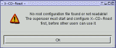
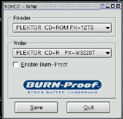
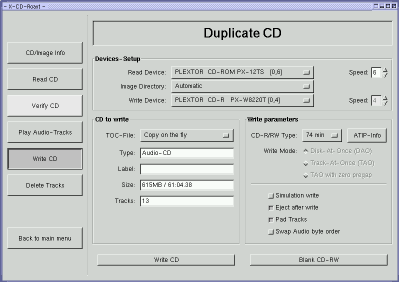
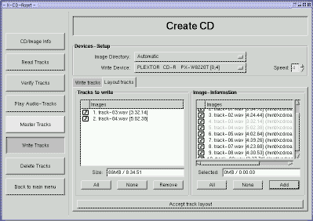
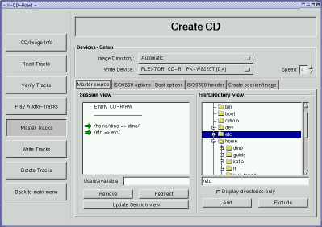
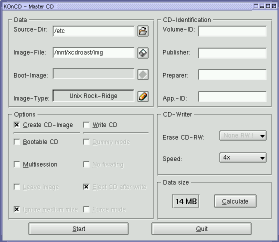

автор Katja и Guido
Socher (homepage)
Об авторе:
Katja является редактором немецкого выпуска LinuxFocus. Она любит Tux,
кино & фотографию, море. Ее домашнюю страничку можно найти здесь.
Guido давний поклонник Линукса и любит его потому, что он создавался
искренними и открытыми людьми. Это одна из причин почему мы называем его
"open source". Его домашняя страница расположена по адресу linuxfocus.org/~guido.
Перевод
на Русский:
Иванов Ю.А. <yaivanov(at)mail.ru>
Содержание:
- Что
Вам понадобится
- Запись
компакт-дисков под обычным пользователем
- Общие
замечания по записи компакт-дисков
- Установка
- Аудио
CD
- Запись
обычных компакт-дисков
- "Backup"
своей домашней директории
- "Смешанные"
компакт-диски
- Некоторые
хитрости:
- Утилиты
командной строки
- Ссылки
- Страница
отзывов
|
Как записать CD в Linux
Резюме:
В этой статье мы расскажем как Вы можете записать компакт-диск в Линуксе.
Возможно Вы уже прочитали статью Кати A
whole new world в нашем последнем выпуске и отправились в путешествие,
прихватив Tux. И сейчас у Вас, просто, огромное количество "видов" и "звуков",
которые хотелось бы увезти домой, но Вы не знаете как. Прекрасным решением этой
проблемы будет записать все на CD и в этой статье, мы как раз и собираемся об
этом рассказать.
Что Вам понадобится
Аппаратное обеспечение:
Конечно же, компьютер с Линуксом и пишущий CD-ROM,
который и сделает всю работу.
Да, если Вы обладатель пишущего CD-ROM'а с
интерфейсом SCSI то шансы, что он будет сразу распознан ядром сильно возрастают.
Вам придется только проверить поддерживается ли Линуксом SCSI хост-адаптер (для
этого смотри hardware database). Но, надо
сказать, что практически все пишущие CD-ROM'ы на SCSI интерфейсе прекрасно
работают под Линуксом.
Так, а что касается пишущих CD-ROM'ов с интерфейсом
ATAPI/IDE, то здесь нужно будет пойти на хитрость. Вам придется сделать так,
чтобы, несмотря на свою физическую сущность, CD-ROM с интерфейсом IDE "стал" бы
SCSI-устройством. Как это сделать описано, например, в файле README.atapi
(смотри пакет xcdroast), также мы рекомендуем Вам прочитать руководство CD
Writing HOWTO (http://www.linuxdoc.org/).
Для пишущих CD с интерфейсом
USB, смотрите руководство USB-CD Writer HOWTO. Данное руководство можно найти на
сайте mobilix.org/linux_usb_cd.html.
Надо
сказать, что поскольку наш опыт ограничивается только пишущими CD-ROM'ми на
интерфейсе SCSI, то в отношении остальных случаев мы только можем повторить то,
что описано в вышеуказанных источниках.
Программное обеспечение:
Для записи CD Вам понадобятся следующие
программы:
- cdrecord: программа, которая непосредственно взаимодействует с Вашим
пишущим CD-ROM'ом.
- mkisofs: эта программ нужна Вам для записи обычных CD. Ее используют для
создания образа файловой системы для CD, т.н. ISO-образ.
- cdda2wav: программа необходимая для чтения аудио данных с аудио
компакт-дисков.
Все три включены в пакет cdrtools, который Вы можете
загрузить с http://www.xcdroast.org/
или ftp.fokus.gmd/pub/unix/cdrecord/
С
помощью этих программ, Вы можете уже сейчас записать компакт-диск пользуясь
исключительно командной строкой. Но, если Вам захочется это сделать с помощью
удобного и дружественного графического интерфейса, выбирайте, для этого
существует масса программ. Но, мы в нашей статье рассмотрим только две, xcdroast
(http://www.xcdroast.org/) и koncd (http://www.koncd.org/). xcdroast может
показаться весьма продвинутой программой с большими возможностями, но нам
все-таки по душе koncd, с ней действительно легко
работать.
Инсталляция
Во многих случаях xcdroast будет уже
инсталлирована на Ваш компьютер, но, по крайней мере, в дистрибутиве от RedHat,
она скомпилирована с pam-библиотекой. Это значит, что всякий раз у Вас будут
спрашивать пароль суперпользователя, если возникнет необходимость записать CD и
Вы, по всей вероятности, не захотите давать пароль суперпользователя всем
желающим записывать компакт-диски. Второй недостаток в том, что она не позволит
Вам запускать программу удаленно через сеть. Таким образом, лучше всего будет
загрузить самую свежую версию программы с http://www.xcdroast.org. Это должно
упростить Вам жизнь хотя бы тем, что там лежат уже собранные пакеты для наиболее
распространенных дистрибутивов.
koncd может быть загружен с www.koncd.org.
Последние версии koncd используют новые возможности QT/KDE. Если Вы не хотите
тратить время на обновление этих библиотек, можете воспользоваться более старой
версией koncd. Для этой статьи мы использовали koncd-0.7.5 под redhat 7.1.
Запись компакт-дисков под обычным пользователем
Для записи дисков Вы,
прежде всего, должны иметь права на запись к файлам устройств /dev/sg*, которые
используются при работе с "железом". Но cdrecord также использует некоторые
расширения, позволяющие избежать "буферной недогрузки" (buffer underruns) во
время процесса записи, что также требует прав суперпользователя. Лучшим выходом
из этого положения будет использование SUID для cdrecord и cdda2wav. У-ух? SUID?
Не беспокойтесь. Вы можете прочитать статью Guido о file
permissions, если хотите точно знать что это значит. Но сейчас будет
досточно, если Вы выполните следующие две команды и затем снова о них забудите
:-)
chmod 4111 /usr/bin/cdrecord
chmod 4111
/usr/bin/cdda2wav
Будьте осторожны, это может привести к потенциальной
"дырке" в Вашей защите, но этот риск определенно меньше того риска, который
может возникнуть расскажи Вы всем желающим записывать компакт-диски пароль
суперпользователя.
Теперь Вы можете проверить правильно ли был распознан Ваш
пишущий CD-ROM. Просто выполните:
cdrecord -scanbus
Если все в порядке, то Вы увидите нечто
аналогичное:
0,6,0 6) 'PLEXTOR ' 'CD-ROM PX-W8220T ' '1.03' Removable
CD-ROM
Числа и описание могут быть другими, это зависит от установленного
"железа".
В качестве альтернативного варианта проверки, Вы можете также
"кликнуть" на кнопке "SETUP" в xcdroast или koncd. Дальше аналогично. Теперь
перейдем к записи CD.
Общие замечания по записи компакт-дисков
При записи компакт-дисков
существуют четыре обязательных шага:
- Вы должны выбрать данные/музыку, которые хотите записать на компакт-диск
- Вы должны установить некоторые опции для записываемого компакт-диска.
Например, при записи аудио дисков, Вы должны установить режим TAO или DAO, при
записи обычных дисков Вам необходимо будет установить некоторые опции для
файловой системы.
- Вы должны создать директорию образа CD-диска с файлами, которые хотите на
него записать. Можно конечно записать Ваш компакт-диск "на лету", если Вы
полностью копируете другой диск, но обычно мы предпочитаем создавать образ
диска сначала на жестком диске. Это дает нам возможность окончательно все
проверить и уж затем только его записывать.
Директория с образом диска
является временным местом хранения для данных, которые будут записываться на
компакт-диск. Для аудио дисков это индексные и wav-файлы с музыкой, а для
обычных дисков это один большой файл, т.н. ISO-образ.
- Вы записываете компакт-диск.
Компакт-диски обычно пишут за "один
проход" и ничто не должно вмешиваться в процесс записи. Но, благодаря
используемым расширениям, контролирующим "буферную недогрузку" (buffer
underruns), которая может привести к порче диска, это остается проблемой только
для пользователей windows. В Линуксе Вам даже не нужен "burn proof" (Buffer
UnderRunN proof), поскольку специальный буффер, =FIFO, внутри CD-ROM'а
компенсирует небольшие помехи и и его обычно хватает чтобы избежать проблем с
записью в Линуксе. Тем не менее, Вы должны быть осторожны и не выполнять никаких
ресурсоемких операций. Вы можете "гулять" по интернету, компилировать программы,
... но удаление большого файла может привести к проблемам и возможно что
результатом будет запорченный компакт-диск.
Если Вы беспокоитесь по поводу
"буферной недогрузки" (buffer underruns), можете сначала провести "тестовую"
запись (dummy write) и проверить все ли будет в порядке при реальной записи. В
этом режиме участвуют реальные данные, но лазер внутри CD-ROM'а выключен.
Конечно же лучше, сначала, выполнить "тестовую" запись, а уже потом реальную, а
не повторять ее затем снова и снова.
Обычно, Вы должны записать все за "один
проход" и если Вы забыли даже какой-нибудь совсем маленький файл, придется
переписывать компакт-диск заново. Существует возможность и многосессионной
записи компакт-диска при которой Вы сможете дописать что-либо еще позже, но об
этом мы не будем здесь рассказывать, цена одного компакт-диска настолько мала,
что воспользоваться указанным режимом повода не будет.
Установка
Когда Вы запустите koncd или xcdroast, Вы увидите что обе
программы имеют кнопку "SETUP". Здесь Вы сможете посмотреть правильно ли было
распознан Ваш CD-ROM и установить некоторые общие опции.

Давайте
взглянем на setup программ xcdroast и koncd:
- xcdroast:
- Первым делом, Вы увидите окошко, которое
скажет, что первым должен запустить программу суперпользователь и
сконфигурировать ее так, чтобы другим пользователям не пришлось этого делать
снова и снова.
- Device Scan: здесь Вы увидите все устройства связанные с шиной SCSI.
- CD settings: здесь Вы можете выбрать свой пишущий CD-ROM и устройство с
которого будут копироваться данные/музыка.
Для "CD writer mode", Вы
должны будете указать правильный драйвер, но обычно достаточно выбрать
"autodetect".
- CD Writer FIFO Buffer size: это зависит от Вашего "железа". Вам следует
обратиться к руководству CD-ROM'а и посмотреть этот размер. Наиболее
употребимыми значениями являются 4 или 8MB.
Так как, компакт-диск должен
записывать данные без помех (из-за конструктивных особенностей пишущих
CD-ROM'ов), существует буффер (FIFO), который позволяет избежать порчи диска
при небольших помехах.
- HD settings: здесь Вы указываете временную директорию для ISO-образа. На
диске должно быть больше 800MB доступного места (можно проверить размер
свободного места командой df -k /the/directory или через файловый менеджер).
- Miscellaneous:
- Audio: сюда следует обратить внимание, если Вы хотите, чтобы xcdroast
проигрывал музыку. Это никак не влияет на процесс записи. DSP означает
цифровой сигнальный процессор и отвечает за за пересылку звуков на
"спикер".
- Network: для многих компактов-дисков есть информация о их названиях в
интернете. Так что если при записи своего компакт-диска, Вам понадобится
такая информация, это сохранит Вам и время, и труд.
- Logging: для создания log-файла
- Internationalization: здесь Вы можете выбрать какой язык будуте
использовать при работе с программой.
- Options: здесь Вы можете, например, установить подсказки к кнопкам.
Особенно, это полезно, если Вы не знаете еще программы.
- Users: Эта панель появляется при условии, что Вы зарегистрированы в
системе как суперпользователь. Здесь Вы указываете, что будет разрешено
делать обычным пользователям.

- koncd:
- Вы увидите в selection box устройства,
которые koncd обнаружил автоматически. Вы можете указать программе на какой
пишущий CD-ROM будут записываться данные и откуда они будут копироваться. Это
может быть Ваш обычный CD-ROM или если у Вас только один пишущий CD-ROM, то он
будет использоваться и для чтения, и для записи.
Здесь Вы также можете
выбрать режим "burn proof", если он поддерживается Вашим пишущим CD-ROM'ом.
"Burn proof" уменьшает скорость Вашего пишущего CD-ROM'а, когда буффер FIFO
(смотри выше) почти пуст.
Аудио CD
Здесь Вам придется подумать немного о формате. Если музыка
берется с другого компакта, то проблем нет. Вы просто берете и копируете ее. Но
в противном случае, Вам следует знать, что cdrecord понимает только au и
wav-файлы и конвертирует их автоматически в правильный формат для проигрывания
на CD-плеере. А, что касается других форматов, то Вам сначала придется
конвертировать их в wav, конечно, если потом не хотите услышать какофонию вместо
музыки. Для конвертирования файлов из mp3 в wav, Вы можете воспользоваться
следующей командой:
mpg123 -w /tmp/song.wav song.mp3
Это позволит Вам
сделать нормальный аудио CD-диск из mp3 музыки. Хотя, это и займет больше места,
но зато Ваш компакт-диск будет играться на любом плеере.
При окончательной
записи компакта, Вы должны будете выбрать какой режим использовать, TAO или DAO.
В режиме TAO Вы получите двухсекундную паузу между песнями, в отличие от режима
DAO, что делает последний пригодным для записи "живой" музыки. В TAO запись идет
треками по-штучно, в DAO диск записывается полностью.
Вы можете полностью
скопировать компакт-диск или переписать песни в любом порядке, с разных дисков,
и даже записать песни, взятые из интернет.
Давайте сначала посмотрим как
можно скопировать компакт-диск без изменений:

- xcdroast:
Выбирите "Duplicate CD".
С левой стороны появится меню,
где будет:
CD/Image Info, Read Tracks, Verify CD, Play Audio-Tracks:
Мы
не знаем почему эти пункты меню доступны, поскольку при копировании
компакт-диска, они не имеют смысла. По крайней мере, в версии для нашей статьи
(xcdroast-0.98alpha9) xcdroast только позволяет нам сделать "запись на лету"
для чего нужен только пункт меню "Write CD". Таким образом, мы переходим прямо
к "Write CD".
Запись CD:
- В верхней части Вы снова должны уточнить устройство с которого будем
читать данные и на какой скорости. Дальше выбирите пишущий CD-ROM и его
скорость. Скорость считывания должна быть немного больше, чем скорость
записи (чтобы избежать "буферной недогрузки").
- Слева Вы увидите "CD to write":
Это только в качестве информации. У
Вас нет другого выбора кроме записи "на лету".
- Справа Вы увидите "write parameters":
CD R/RW type: здесь Вы должны
указать сколько минут музыки будет записано на компакт
и затем Вы должны
будете выбрать между режимами TAO и DAO (смотри выше)
Вы можете затем
решить сначала сделать "тестовую" запись (смотри выше), если хотите, чтобы
CD-ROM сам отдал диск после окончания процесса записи. "Pad tracks" не важны
при копировании CD.
"Blank CD-RW" позволит удалить содержимое
перезаписываемого компакт-диска, а "WRITE CD" позволит Вам его записать. Вот
и все.
- koncd:
Выбирите "Copy CD".
В верху, Вы можете удалить содержимое
перезаписываемого компакт-диска и установить скорость записи. В "options" Вам
больше ничего не надо выбирать. Нажмите "START" и процесс записи начнется.
Давайте теперь посмотрим, что Вы должны делать, если нужно
записать компакт с музыкой, взятой из различных источников:
- xcdroast
Вы должны выбрать "Create CD".

Давайте
посмотрим на меню:
- CD/Image info:
С левой стороны, Вы увидите содержимое компакта с
которого будут взяты данные. С правой стороны, будет содержимое директории
образа диска, если у Вас там что-то есть. Здесь ничего делать не надо.
Перейдем прямо к "Read Tracks"
- Read Tracks:
В верхней части, Вы должны выбрать устройство с которого
будут читаться данные и директорию образа диска. Теперь, треки будут
записаны как отдельные wav-файлы, а не как один большой файл образа. Для
музыкальнях дисков, Вам не следует выбирать большие скорости записи, аудио
компакт-диски рассчитаны только на чтение при скорости "1 x", а большие
скорости увеличивают возможность появления ошибок, что влияет на качество.
Однако скорости "4 x" или "8 x" вполне приемлемы.
Для копирования
музыкальных треков в директорию образа диска выбирите необходимые треки
затем нажмите "READ SELECTED TRACKS".
- Verify CD:
Если Вы нажмете кнопку "VERIFY", то проверите были ли
музыкальные треки скопрованы без ошибок или нет.
- Play Audio-Tracks:
Здесь Вы можете проигрывать песни, находящиеся в
директоии образа диска. Чтобы выбрать песню для проигрывания Вам нужно
дважды "кликнуть" на ней.
- Master tracks:
Это относится только к обычным CD. Пропустите это
сейчас.
- Delete Tracks:
Здесь Вы можете увидеть сколько места уже использовано
и сколько еще осталось. Также Вы можете удалить все или некоторые треки из
директори образа диска по своему желанию.
- Write Tracks:
Здесь Вам, прежде всего, необходимо обратиться к второй
панели "Layout tracks". Справа Вы увидите содержимое диретории образа.
Выберите треки и нажмите "add" для копирования их в левую панель для
записываемых треков. Вернитесь к панели "write tracks". Здесь Вы найдете
некоторые опции, о которых уже говорилось в "Duplicate CD". Теперь Вы должны
выбрать опцию "PAD tracks". Это для того, чтобы убедиться что все .wav-ы,
соответствующим образом, ограничены по границам сектора. Формат аудио CD
требует, чтобы все wav-файлы были кратны длине в 2352 байта. "PAD tracks"
добавляет некоторое количество нулевых байтов для соблюдения описанного
условия. Нажмите "WRITE CD" для записи диска.
- koncd:
Выбирите "audio CD". Версия использованная в этой статье (0.7.5)
еще не имела возможности читать отдельные аудио треки с аудио дисков. Но Вы
можете выбрать wav-файлы на своем жестком диске и записать их как аудио треки
на компакт. "Кликните" на "Add track" и добавьте нужные wav-файлы в список
выбранных треков. В "options" выбирите "Use padding" и затем "кликните" на
"start" для записи CD.
Запись обычных компакт-дисков
Для обычных CD Вам нужна файловая система
или как часто говорят CD должен быть отформатирован. Т.е. Вам нужно самим
выбрать необходимую файловую систему. Этот выбор будет зависеть от той
операционной системы на которой Вы собираетесь читать свои диски. Стандарт
ISO-9660, который описывает файловую систему CD, например, не допускает
использования длинных имен файлов. Таким образом, для этого стандарта нужны
дополнительные расширения. И такие расширения есть для Линукса и Юникса это
RockRidge, а для Microsoft - Joliet.
В качестве рекомендации можно
посоветовать использовать на одном диске и RockRidge и Joliet стандарты.
Если
Вы просто хотите полностью скопировать другой компакт-диск, то Вам не нужно
беспокоиться о файловой системе, копируемый диск уже имеет файловую систему:
- xcdroast:
Выберите "Duplicate CD"
и затем сделайте все как
описывалось выше. Просто перейдите к пункту "WRITE CD".
- koncd:
Выберите "Copy CD" (смотри выше).

Если Вы хотите скопировать данные с Вашего жесткого
диска:
- xcdroast:
Выберите "Create CD" и дальше "Master Tracks" в меню с левой
стороны.
- В "Master source" выберите директории, которые Вы собираетесь записать
на свой компакт. Также Вы можете выбрать пути и имена, которые эти
директории будут иметь на диске (используйте для этого кнопку "redirect" с
левой стороны).
- ISO 9660 options:
Вы можете выбрать один из уже предопределенных
типов образов:
просто используйте RockRidge + Joliet, усли хотите чтобы
Ваш компакт читался и под Линуксом, и под Windows.
- В "boot options" Вы можете создать загрузочный CD-диск, однако это
выходит за рамки нашей статьи. Если Вы хотите создать загрузочный
компакт-диск, то мы порекомендуем Вам использовать один из уже созданных
ISO-образов (смотри ссылки в конце статьи)
- Create session/image: Это наиболее важная панель. Здесь Вы можете
создать ISO-образ файлов, выбранных в первой панели. Нажмите кнопку для
этого "master image to file".
Всегда выбирайте "fixation" (или лучше: не
выбирайте "Do not fixate after write"), если Вам не нужна
"мультисессионность", в противном случае, не будет создан Toc (= Table of
Contents) и Ваш компакт-дискне будет читаться на многих CD-плеерах.
Теперь переходим к "Write Tracks":
Здесь Вы выбираете образ,
который Вы создали в панели "Master tracks" и записываете его на компакт.
Перейдите к панели "Layout tracks", выбирите образ и нажмите "add". Затем
вернитесь обратно к панели "Write tracks" и нажмите внизу кнопку "write
tracks". Теперь Ваш компакт-диск записывается.

- koncd:
Скопируйте все файлы, которые Вам нужны в одну директрию
(используйте либо shell-команду cp или файловый менеджер).
Откройте koncd и
выбирите "Master CD".
В "data" Вы указываете директорию-источник в которую
были скопировали файлы. Теперь у Вас есть несколько возможностей создать CD.
Мы рекомендуем сначала создать ISO-образ и только потом записать его на
компакт-диск. В "Data" -> "image file" введите имя для файла-образа диска,
который будет создан. В версии, использованной в этой статье требовалось,
чтобы файл уже сущестовал. Таким образом, создайте пустой файл с именем
"image". Это можно сделать командой "touch image".
Перейдите к "options" и
"кликните" на "Create CD image", нажмите справа "calculate size" и затем
"start".
Как только образ будет создан, Вы "кликаете" на опции "Write CD" и
отменяете выбор для "Create CD-image". Теперь пишущий CD-ROM запишет для Вас
данные на компакт-диск.
"Backup" своей домашней директории
Вы можете сделать "backup" всего
необходимого на компакт аналогично тому, как это было сделано в разделе "запись
обычных CD-дисков". Для "backup"'а, например, своей домашней директории,
выбираете в качестве источника свою директорию. Если данные в Вашей домашней
директоии занимают гораздо больше места, чем можно вместить на компакт-диск, то
выберите отдельные поддиректории и запишите их на различные компакт-диски.
"Смешанные" компакт-диски
Все как говорилось выше. Технически
"смешанный" компакт-диск это тот же аудио компакт только начинается он с трека с
обычными данными (небольшого iso-образа).
Некоторые хитрости:
Иногда полезно, предварительно перед записью,
проверить правильно ли был создан ISO-образ. Для этого Вы можете смонтировать
ISO-образ как обычный компакт-диск:
Зарегисрируйтесь в системе как суперпользователь: su -
Создайте
пустую диреторию (известную как точка монтрования): mkdir
/tmp/mycd
Смонтируйте ISO-образ (свяжите ISO-образ с диреторией):
mount -o
loop -t iso9660 Image.iso /tmp/mycd
Теперь можно использовать команду "ls"
для проверки образа диска: ls /tmp/mycd
Если все нормально, тогда
размонтируйте ISO-образ: umount /tmp/mycd
... и запишите его на
компакт.
Утилиты командной строки
Выше мы рассказали о двух графических
программах для записи компакт-дисков. Если Вы взглянете на man-странички
cdrecord Вы увидите там сотни опций, у-уу-уух... но не отчаивайтесь. Все проще,
чем выглядит по-началу. Загрузите два perl-скрипта cdrecordeasy и mkisofseasy.
Они включены в пакет easycdscripts
(download page)
Распакуйте их командой
tar zxvf easycdscripts-0.1.tar.gz
Теперь запустите команду
cdrecord -scanbus. Посмотрите на строку, где идет речь о Вашем пишущем CD-ROM'е
и запомните числа, которые будут ее в начале. Это должно быть что-то вроде 0,4,0
or 0,6,0 ....
Отредактируйте файл cdrecordeasy, запишите эти числа за строкой
в которой написано $dev=... Вы найдете ее где-то ближе к началу.
Инсталляция
наших двух маленьких скриптов закончена. Теперь записать компакт-диск пара
пустяков:
- Скопируйте все файлы, которые Вам нужны в одну директрию (напр., ~/cdrom).
Жесткие диски нынче весьма вместительны и относительно дешевы, так что
скопировать несколько сотен мегабайт труда не составит.
- Запустите команду: mkisofseasy ~/image.iso ~/cdrom
Этим Вы создадите
ISO-образ всех файлов в диретории ~/cdrom.
- Запишите компакт-диск командой: cdrecordeasy ~/image.iso
Вот и
все. Все оказалось проще, чем могло показаться в начале, не так ли!?
:-)
Удачи Вам!
Ссылки
CD Writing Howto:
linuxdoc.org
Linux
MP3 CD Burning mini-HOWTO: linuxdoc.org( Как создать нормальный аудио CD из
mp3-файлов )
USB CD howto:
mobilix.org/linux_usb_cd.html
A big bootable CD image:
http://rescuecd.sourceforge.net/
Various boot CDs and
linux on one floppy systems